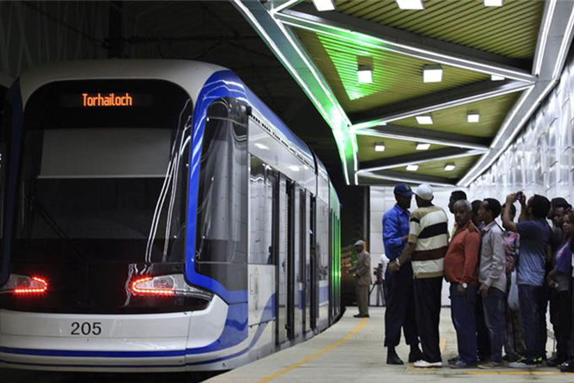

Understand
With a population of 3,384,569 (2007 census), the city is the largest in the country.
Many of the wealthiest people live in the southeast (Bole), southwest (old airport),
CMC, Ayat and Lamberet parts of town. There are more than 120 international missions
and embassies in Addis Ababa, making the city a hub for international diplomacy concerning
Africa. The headquarters of the African Union and the UN Economic Commission for Africa
UNECA)[1] are both in the city. The European Union and the United States both have two
delegations in Addis Ababa, one for bilateral relations with Ethiopia and one for the African Union.
By Plane
Bole International Airport (IATA: ADD), the busiest airport in East Africa and the hub of Ethiopian Airlines[2], is serviced by several international airlines with daily flights to Europe, United States, and Asia as well as inter-African destinations including Accra, Bamako, Brazzaville, Cairo, Dakar, Dar es Salaam, Djibouti, Khartoum, Harare, Johannesburg, Nairobi and many more cities in Africa. Turkish Airlines has daily flights from Istanbul to Addis Ababa. There are two terminals. T1 (the older, smaller one) is for all domestic flights and most flights to neighbouring nations (but not Kenya). T2 (the newer 2003 building) is for all other international flights - arrangements may change so check first. As of July 2012 access into the terminals is restricted. Anyone at the airport to meet you, plus taxis, will be out in the carpark. A dozen of the top hotels still have a booth inside the arrivals area. Similar rules apply at the other airports in the country, for both arrivals and departures. Most hotels will pick you up for free - inquire at booking. One month single entry visa on arrival costs 50USD while three months costs 70USD, note that it is impossible to apply multi-entry visa in the airport now. (2016 June)By Car
Most of the roads are in good condition.By Train
Services on the old metre-gauge railway between Addis Ababa and Djibouti via Dire Dawa were cancelled in 2008. A new standard-gauge railway has recently been built; passenger services from Djibouti via Dire Dawa, Awash and Adama to Lebu and Kality were inaugurated in 2017. By Bus
Bus terminals:Autobus Terra near Mercato: This is the main bus terminal where most of the national buses arrive and depart.
Meskel Square: (formerly from the railway station)